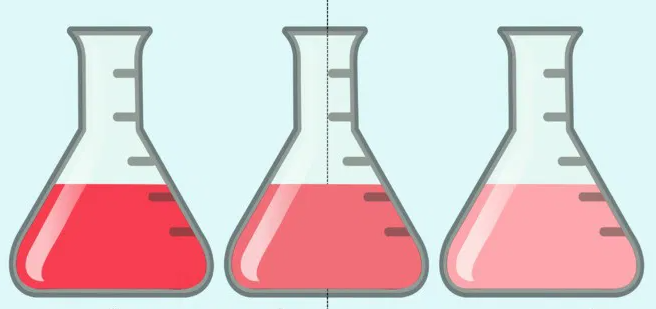
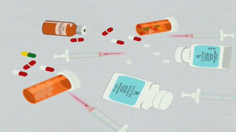
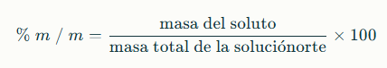
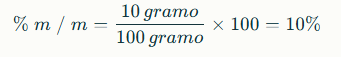

pH EN SOLUCIONES
FÍSICAS
👩🔬LA PROPORCIÓN ESCONDIDA
¿Qué son las unidades de concentración física?
Son formas de expresar cuánto soluto hay en una solución calculando en la cantidad de masa o volumen, sin entrar en cálculos químicos complicados como moles. Estas unidades muestran la proporción del soluto en relación con la solución total, usando cantidades que se pueden medir fácilmente.

📏UNIDADES FÍSICAS MÁS IMPORTANTES
🧪Porcentaje masa/masa (% m/m % p/p):
- Indica cuántos gramos de soluto hay en 100 gramos de solución.
- Ejemplo: si tienes 5 g de sal en 100 g de agua con sal, la concentración es 5% m/m.
🧪Porcentaje volumen/volumen (% v/v):
- Usada cuando el soluto y el solvente son líquidos. Expresa cuántos mililitros de soluto hay en 100 mililitros de solución.
- Ejemplo: en un jarabe, si hay 10 ml de azúcar líquido en 100 ml de jarabe, tiene 10% v/v.
🧪 Porcentaje masa/volumen (% m/vo % p/v):
- Indica gramos de soluto en 100 mililitros de solución.
- Ejemplo: 2 g de medicamento en 100 ml de solución es 2% m/v.
🧪 Partes por millón (ppm):
- Se usa para concentraciones muy pequeñas, como contaminantes en el agua.
- Expresa miligramos de soluto por litro o kilogramo de solución.
- Ejemplo: 1 ppm es igual a 1 mg de soluto en un litro de solución.
⚠️¿POR QUÉ SON IMPORTANTES?
Estas unidades físicas son útiles en la vida diaria y en laboratorios para describir y preparar soluciones con precisión sin usar términos científicos complejos. Por ejemplo, se usan en:
- Medicina para preparar medicamentos.
- Industria para controlar la calidad.
- Cocina para preparar mezclas y jugos. 
👀VEAMOS UN EJERCICIO
Se preparó una solución mezclando 10 gramos de azúcar (soluto) con 90 gramos de agua (solvente). ¿Cuál es el porcentaje de masa de azúcar en la solución?
solución:
1. Calculamos la masa total de la solución:
masa total=masa del soluto + masa del solvente =10 gramo+90 gramo=100 gramo
2.Usamos la fórmula para porcentaje masa/masa:
3. Sustituimos los valores:

Resultado:
La concentración de azúcar en la solución es 10% masa/masa . Esto significa que por cada 100 gramos de solución, 10 gramos son azúcar.
💻 POR SI ACASO, UN TUTORIAL
Obra publicada con Licencia Creative Commons Reconocimiento Compartir igual 4.0